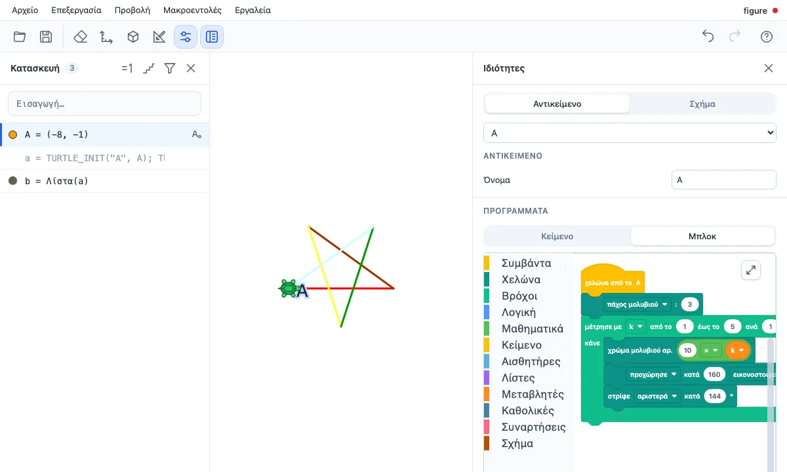
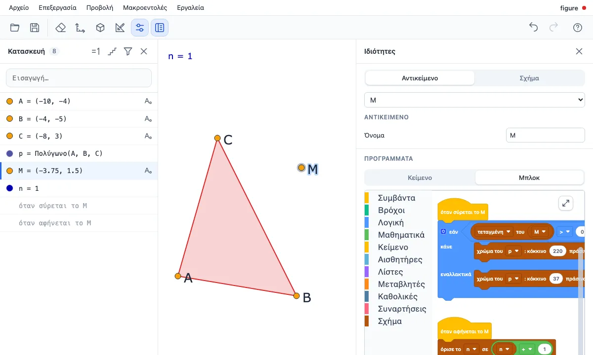
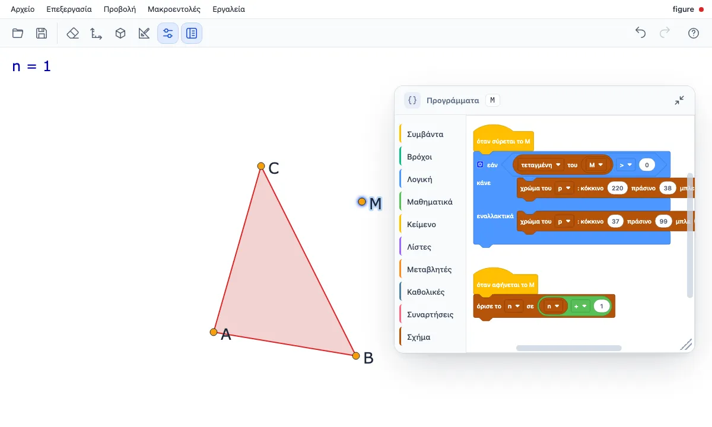

Εκφράσεις και δρομείς
Εκφράσεις
Κάθε γραμμή που δεν είναι ούτε σημείο ούτε εντολή δημιουργεί μια έκφραση, που εμφανίζεται πάνω αριστερά με δύο δεκαδικά ψηφία. Το είδος της προκύπτει από το κείμενο:
| Γραμμή | Είδος |
|---|---|
a = 3,
lista = [1, 2, 3]
|
σταθερά |
t = "Γεια σας" |
κείμενο |
f = 0.5x^2 - 4 |
συνάρτηση του x (y, z, t)· το
f(2) την καλεί, το
f'(2) καλεί την παράγωγό της
|
f(x) = ax^2 + bx + c |
καμπύλη της συνάρτησης, σχεδιασμένη: το
ax διαβάζεται a x, δημιουργούνται
οι δρομείς a, b, c· το f(2) την
καλεί επίσης
|
f(x) = x^2, (-1 <= x <= 2)
|
καμπύλη σχεδιασμένη σε διάστημα, γραμμένο όπως
στο GeoGebra (≤ ή
<=)· ένα όριο μπορεί να λείπει
((x >= 0)), και κάθε όριο μπορεί
να είναι τύπος ((0 <= x <= a))
|
E = d(A, B) |
μέτρηση, που ξαναϋπολογίζεται όταν κινείται το σχήμα |
u = "AB = " + round(d(A, B)*100)/100
|
υπολογιζόμενο κείμενο |
Σε έναν τύπο, ένα σημείο αντιστοιχεί στις συντεταγμένες του, ένα τμήμα στο μήκος του, ένας κύκλος στην ακτίνα του, ένα πολύγωνο στο εμβαδόν του, μια γωνία στο μέτρο της. Πλήρης σύνταξη: Τύποι και προγράμματα.
Μια έκφραση μετακινείται σύροντας το κείμενό της· όταν είναι συνδεδεμένη με ένα σημείο, το ακολουθεί. Το άγγιγμά της την επιλέγει ή γράφει το όνομά της κατά την εισαγωγή.
Δρομείς
r = Δρομέας(0, 5, 2): από 0 έως 5, τιμή 2. Τα όρια
μπορούν να είναι εκφράσεις ή τύποι (Δρομέας(0, d(A, B), 1)). Βήμα, μήκος, προσανατολισμός, λαβή και κίνηση ρυθμίζονται
στις ιδιότητες. Το
r = 5 τον κάνει ξανά σταθερά. Επιλεγμένος, κινείται
επίσης
με το ελατήριο.
Ένα άγνωστο όνομα που αρχίζει με πεζό γράμμα δημιουργεί δρομέα
από −5 έως 5, με βήμα 0,1 και τιμή 1: A = (a, 4),
d = y = m x + p. Ένα ελληνικό γράμμα δημιουργεί
γωνία από 0 έως 360°, με βήμα 1° και τιμή 45° (από 0 έως 2π σε
ακτίνια): P = (3; α). Μια γραμμή που απορρίπτεται
δεν κρατά τους δρομείς της.
Υπολογιζόμενα σημεία
-
M = (x(B) + 1, y(A)): συντεταγμένες που δίνονται από τύπους. -
N = Σημείο(2*B - A): τύπος του οποίου η τιμή είναι σημείο. -
P = (3; 60°): πολικές συντεταγμένες, ακτίνα και γωνία.
Όταν η τιμή μιας γραμμής όνομα = τύπος είναι σημείο
ή λίστα σημείων, κουμπιά στο τέλος της γραμμής προτείνουν
Σημείο,
Λίστα σημείων,
Λίστα τμημάτων ή
Έκφραση. Το Enter
παίρνει το τονισμένο κουμπί: σημείο ή λίστα για όνομα με
κεφαλαίο, έκφραση αλλιώς. Γι’ αυτό
lista = [1, 2, 3] και όχι
L = [1, 2, 3], που θα διαβαζόταν ως σημείο του
χώρου.
Λίστες σημείων
Το q = Λίστα(pts) σχεδιάζει τα σημεία της έκφρασης
pts· ένα μη ορισμένο σημείο διακόπτει τη γραμμή.
Μια επιλεγμένη έκφραση με τιμή λίστα σημείων προτείνει επίσης
και
στη ζώνη περιβάλλοντος (και
για τιμή σημείο): η γραμμή
γράφεται και η έκφραση κρύβεται.
Ακολουθίες
Η L = Ακολουθία((k, k^2), k, -2, 2) τοποθετεί τα
σημεία (k, k²) για k από −2 έως 2, με βήμα 1· ένα πέμπτο όρισμα
δίνει άλλο βήμα. Το στοιχείο μπορεί επίσης να είναι αριθμός,
Τμήμα(P, Q), Ευθεία(P, Q),
Κύκλος(O, r) ή Πολύγωνο(A, B, C, …),
με ορίσματα τύπους του k:
Ακολουθία(Κύκλος(A, k), k, 1, 3). Στον χώρο, ένα
τρίτο όρισμα δίνει τη διεύθυνση u του άξονα του κύκλου, κάθετου
στο επίπεδό του: Κύκλος(O, r, u).
Μια ακολουθία μπορεί να περιέχει άλλη, της οποίας τα όρια
διαβάζουν τη μεταβλητή της πρώτης:
Ακολουθία(Ακολουθία((i, j), j, 1, i), i, 1, 4). Σε
έναν τύπο, μια λίστα σημείων διαβάζεται με το όνομά της, από το
0: L[0], L[k-1],
L[i][j] για εμφωλευμένες ακολουθίες,
L.length για το πλήθος των στοιχείων της. Γράψτε
2*i: το 2i είναι μιγαδικός αριθμός.
Προγράμματα
Μια έκφραση μπορεί να είναι πρόγραμμα: εντολές χωρισμένες με
;, όπου η τελευταία δίνει την τιμή· μπορεί να
μορφοποιεί άλλα αντικείμενα (S1.setHidden(1)).
Γλώσσα:
Τύποι και προγράμματα.
- Το (παλέτα, οικογένεια «Προγράμματα») ανοίγει ένα κενό πρόγραμμα· η Δημιουργία ή το Ctrl Enter δημιουργεί την έκφραση.
- Για μια υπάρχουσα έκφραση, η ενότητα Ορισμός των ιδιοτήτων επεξεργάζεται το κείμενο σε πολλές γραμμές: το Enter κρατά την εσοχή, το Tab προσθέτει εσοχή, το } την αφαιρεί, το Ctrl Enter εφαρμόζει, το Esc επαναφέρει, η Μορφοποίηση βάζει εσοχές σύμφωνα με τα άγκιστρα.
- Ένα λάθος επιλέγει τη λανθασμένη γραμμή ή τον οριοθέτη χωρίς ζεύγος.
Μπλοκ και χελώνα
Ένα πρόγραμμα γράφεται και με μπλοκ: η ενότητα Ορισμός περνά από Κείμενο σε Μπλοκ. Τα μπλοκ σύρονται από τις κατηγορίες (Βρόχοι, Λογική, Μαθηματικά, Κείμενο, Αισθητήρες, Λίστες, Μεταβλητές, Καθολικές, Συναρτήσεις, Σχήμα) και κουμπώνουν κάτω από το μπλοκ πρόγραμμα· ένα μπλοκ επίστρεψε δίνει την τιμή. Κάθε αλλαγή εφαρμόζεται αμέσως και αναιρείται όπως οι άλλες. Κείμενο και μπλοκ δείχνουν το ίδιο πρόγραμμα: η επιλογή διατηρείται για τα επόμενα.
Οι καθολικές, κοινές σε όλα τα προγράμματα του σχήματος, δημιουργούνται στην κατηγορία Καθολικές με Δημιουργία καθολικής…· ένα πρόγραμμα τις ορίζει, τις αυξάνει ή τις διαβάζει. Σε ένα βιβλίο εργασίας είναι κοινές σε όλες τις σελίδες: μια καθολική που ορίζεται σε μια σελίδα έχει την ίδια τιμή στις άλλες.
Στην κατηγορία Λίστες, το μπλοκ L [ i ] διαβάζει το στοιχείο αρ. i μιας λίστας, με το πρώτο να είναι το αρ. 1, και το μπλοκ L [ i ] = v αλλάζει εκείνο μιας μεταβλητής ή μιας καθολικής.
Το μπλοκ τελευταίο στοιχείο του διαβάζει το τελευταίο στοιχείο μιας λίστας· το πρόσθεσε … στο τέλος της επεκτείνει τη λίστα μιας μεταβλητής και το αφαίρεσε το πρώτο στοιχείο του (ή το τελευταίο) τη συντομεύει. Το διάκοψε τη λίστα διακόπτει τη γραμμή που σχεδιάζει μια λίστα σημείων, όπως το σηκωμένο μολύβι της χελώνας: τα σημεία που προστίθενται μετά ξεκινούν νέα γραμμή.
Στην κατηγορία Βρόχοι, το μπλοκ περίμενε … ms κάνει παύση στο πρόγραμμα ενός κουμπιού, ενώ το σχήμα ξανασχεδιάζεται: αρκετό για κίνηση βήμα βήμα. Ένα νέο άγγιγμα του κουμπιού σταματά το πρόγραμμα που εκτελείται.
Στην κατηγορία Αισθητήρες, το μπλοκ
ρώτησε … και περίμενε κάνει μια ερώτηση και
σταματά το πρόγραμμα μέχρι την απάντηση, που πληκτρολογείται σε
ένα πεδίο και επιβεβαιώνεται με OK ή Enter· το μπλοκ
απάντηση τη διαβάζει έπειτα, ως αριθμό αν είναι
αριθμός (12,5), αλλιώς ως κείμενο. Κάθε εκτέλεση
του προγράμματος έχει τη δική της απάντηση.
Στην κατηγορία Συναρτήσεις, μια συνάρτηση μπορεί επίσης να δίνει μια τιμή: το μπλοκ σε … επέστρεψε δημιουργεί ένα μπλοκ που την καλεί και μπαίνει όπου μπαίνει μια τιμή. Τις μεταβλητές ενός προγράμματος τις μοιράζονται οι συναρτήσεις του, εκτός από τις συναρτήσεις των σχημάτων DGPad, που κρατούν για τον εαυτό τους τις μεταβλητές που ορίζουν, όπως στο DGPad.
Η κατηγορία Σχήμα δίνει επίσης τη γωνία τριών
σημείων (γωνία 180°, μεταξύ 0 και 180°, ή
360°, προσανατολισμένη), το
πλάτος του παραθύρου, τη
μονάδα σε pixel και τα άλλα μεγέθη της
προβολής· το βέλη του … βάζει βέλη στα άκρα των
τμημάτων μιας λίστας (μήκος και πλάτος σε pixel). Το μπλοκ
έκφραση δέχεται έναν πληκτρολογημένο τύπο, για
παράδειγμα f(t) για τον υπολογισμό μιας συνάρτησης
του σχήματος. Στην κατηγορία Κείμενο, το
εμφάνισε το μήνυμα εμφανίζει ένα μήνυμα.
Η Χελώνα, στη ζώνη ενεργειών ενός σημείου, δημιουργεί τη χελώνα που ξεκινά από αυτό το σημείο και την ανοίγει σε μπλοκ. Προχωρά (σε εικονοστοιχεία ή μονάδες), στρίβει (σε μοίρες), σηκώνει ή κατεβάζει το μολύβι, αλλάζει χρώμα και πάχος, γεμίζει, γράφει, στρέφεται προς ένα σημείο ή πηγαίνει σε αυτό. Το σχέδιό της, μια λίστα, ακολουθεί το σημείο και τα αντικείμενα που διαβάζει το πρόγραμμα. Όσο εμφανίζεται το πρόγραμμά της, η χελώνα σχεδιάζεται εκεί όπου καταλήγει, στραμμένη προς την κατεύθυνσή της (ένα βέλος στον χώρο, πράσινο όταν η πάνω πλευρά της κοιτάζει προς εσάς): κάθε μπλοκ που προστίθεται τη δείχνει να προχωρά ή να στρίβει.

Οι χελώνες των σχημάτων του DGPad ανοίγουν με τον ίδιο τρόπο: με
ανοιχτό τον πίνακα ιδιοτήτων, αγγίξτε τη γραμμή τους
blk_turtle_exp_… στον πίνακα «Κατασκευή». Ένα
πρόγραμμα με εντολή χωρίς μπλοκ μένει σε κείμενο.
Τα κουμπιά των σχημάτων του DGPad (ένα βέλος και μια ετικέτα) εκτελούν το πρόγραμμά τους όταν τα αγγίζετε, ακόμη και με ανοιχτό τον πίνακα ιδιοτήτων: έτσι δοκιμάζετε το πρόγραμμα ενώ το τροποποιείτε. Το άγγιγμα του κύκλου τους με τις τρεις τελείες επιλέγει το κουμπί, το σύρσιμό του το μετακινεί· το Ρυθμίσεις, στη ζώνη ενεργειών, ανοίγει το πρόγραμμά του σε μπλοκ. Το μπλοκ όρισε το … σε της κατηγορίας Σχήμα αλλάζει την τιμή μιας παράστασης.
Χελώνες και κουμπιά δημιουργούνται επίσης από την παλέτα
εργαλείων, οικογένεια Προγράμματα: το
Χελώνα ξεκινά από το
σημείο που επιλέγετε (ένα κενό σημείο της οθόνης δημιουργεί
ένα), το
Κουμπί τοποθετείται εκεί που επιλέγετε· το
καθένα ανοίγει αμέσως το πρόγραμμά του σε μπλοκ. Πληκτρολογημένο
στη γραμμή εισαγωγής, το
Κουμπί("Εκτέλεση") δημιουργεί ένα κουμπί στο κέντρο
της προβολής· η γραμμή του στον πίνακα «Κατασκευή» αλλάζει την
ετικέτα του.
Προγράμματα συμβάντων
Όπως στο Scratch, ένα πρόγραμμα μπορεί να απαντά σε ένα συμβάν: ένα σημείο που μετακινείται και το σύρουμε, το πατάμε ή το αφήνουμε, μια παράσταση της οποίας η τιμή αλλάζει. Μορφοποιεί αντικείμενα και, με το μπλοκ όρισε το … σε, αλλάζει την τιμή μιας παράστασης ή τοποθετεί ένα ελεύθερο σημείο. Το πρόγραμμα «σύρεται» εκτελείται και όσο το σημείο κινείται αυτόματα.
Στην παλέτα εργαλείων, οικογένεια Προγράμματα, τα Όταν σύρεται το αντικείμενο, Όταν πατιέται το αντικείμενο και Όταν αφήνεται το αντικείμενο επιλέγουν ένα σημείο που μετακινείται, το Όταν αλλάζει η τιμή μια παράσταση. Το πρόγραμμα ανοίγει σε μπλοκ κάτω από το αρχικό του μπλοκ, για παράδειγμα όταν σύρεται το M· αν υπάρχει ήδη, εμφανίζεται.

Εδώ, το σύρσιμο του M χρωματίζει το τρίγωνο κόκκινο πάνω από τον άξονα των τετμημένων, μπλε από κάτω· η απελευθέρωσή του αυξάνει το n κατά 1.
- Η ενότητα Προγράμματα των ιδιοτήτων ενός σημείου ή μιας παράστασης δείχνει όλα τα προγράμματά του, μαζί με τη χελώνα του, το καθένα κάτω από το αρχικό του μπλοκ και επεξεργάσιμο. Το Κείμενο δείχνει εκείνο στο οποίο κάνατε κλικ τελευταίο.
- Χωρίς πρόγραμμα, η Προσθήκη προγράμματος ανοίγει την κατηγορία Συμβάντα: σύροντας ένα αρχικό μπλοκ στον χώρο εργασίας δημιουργείται το πρόγραμμα.
-
Κάθε πρόγραμμα έχει τη γραμμή του στον πίνακα «Κατασκευή»,
για παράδειγμα
όταν σύρεται το M: αγγίζοντάς την ανοίγει. - Σύροντας μια στοίβα πάνω στη λίστα των κατηγοριών, ή διαγράφοντας το αρχικό της μπλοκ, διαγράφεται το πρόγραμμα.
- Δεξί κλικ σε ένα αρχικό μπλοκ: η Σύμπτυξη στοίβας αφήνει μόνο αυτό το μπλοκ, με ένα σήμα που δίνει τον αριθμό των μπλοκ της· ένα κλικ στο σήμα ή η Ανάπτυξη στοίβας την ξανανοίγει.
Το κουμπί πάνω δεξιά στα μπλοκ τα μεγεθύνει πάνω στο σχήμα, σε ένα διάφανο παράθυρο: οι πίνακες σβήνουν, το σχήμα μένει στη θέση του. Το παράθυρο μετακινείται από τη γραμμή τίτλου του (ένα διπλό κλικ το επαναφέρει στη θέση του) και αλλάζει μέγεθος από τη γωνία του· το ίδιο κουμπί επαναφέρει τα μπλοκ στον πίνακα.

Τα προγράμματα συμβάντων των σχημάτων DGPad (σύρσιμο, πάτημα και απελευθέρωση σημείου, αλλαγή τιμής) ανοίγουν και τροποποιούνται με τον ίδιο τρόπο.
Το πρόγραμμα ανοίγματος μιας έκφρασης ή ενός κουμπιού ενός σχήματος DGPad εκτελείται μία φορά, όταν ανοίγει το σχήμα· εμφανίζεται κάτω από το αρχικό μπλοκ όταν ανοίγει το σχήμα.